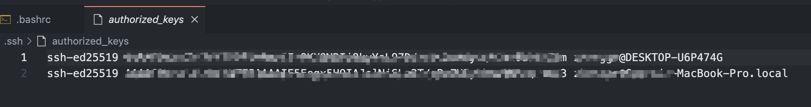
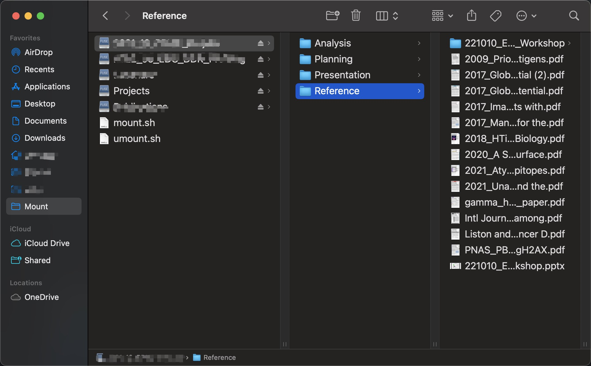

![]()
Setup SSH Remote Keys
The following setup will help to ogin to server without using password and IP address with SSH remote key
- Add remote server host into lost hosts files
- Mac:
code /etc/hosts - Windows:
C:\Windows\System32\drivers\etc\hosts
### On the local machine:
172.20.***.** nucleus.ccpa nucleus
172.20.***.** lipid-droplets.ccpa lipid-droplets- Generate public key
###
local> cd ~/.ssh
local> ssh-keygen -t ed25519
local> ls
local> cat id_ed25519.pub - Add the public key to remote server
### On the remote server
remote> cd ~/.ssh
remote> chown -R chase:users .ssh
remote> chmod 700 .ssh
remote> scp username@local://home/user/.ssh/id_ed25519.pub .ssh/authorized_keys
remote> chmod 644 .ssh/authorized_keys
### For multiple machines, add the publick key to the authorized_keys in a new line
local> cat id_ed25519.pub
Make Bash with colors
In the remote server, add the following script to the ~/.bashrc
PS1='\[\033[1;36m\]\u\[\033[1;37m\] @\[\033[1;32m\] \h:\[\033[1;33m\] \w\[\033[0;97m [\t]\[\033[0;97m \n\[\033[1;35m\]\$\[\033[0m\] 'Powerful Terminal
### Install [Home-brew](https://brew.sh/)
/bin/bash -c "$(curl -fsSL https://raw.githubusercontent.com/Homebrew/install/HEAD/install.sh)"
### Change default shell from bash to zsh
chsh -s $(which zsh)
### Install oh-my-zsh in the terminal
sh -c "$(curl -fsSL https://raw.githubusercontent.com/ohmyzsh/ohmyzsh/master/tools/install.sh)"
### change default theme to ys
open ~/.zshrc
ZSH_THEME="ys"
### install oh-my-zsh plugins
git clone https://github.com/zsh-users/zsh-syntax-highlighting.git ${ZSH_CUSTOM:-~/.oh-my-zsh/custom}/plugins/zsh-syntax-highlighting
git clone https://github.com/zsh-users/zsh-autosuggestions ${ZSH_CUSTOM:-~/.oh-my-zsh/custom}/plugins/zsh-autosuggestions
### make oh-my-zsh plugins working
vim ~/.zshrc
### then add following
plugins=(
git
zsh-autosuggestions
zsh-syntax-highlighting
colored-man-pages
colorize
)
### Make it working
source ~/.zshrcMount remote files on mac

Install
macFUSEandSSHFS: https://osxfuse.github.io/Create mount directory in local
$ mkdir ~/mount/mountpoint- Mount directory
sshfs «user»@«host»: «mountpoint»- Un-mounting the remote volume
$ umount ~/mount/mountpoint